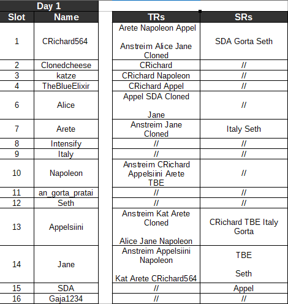

Exactly.
read me right meow
there is a scientific reason for this
Tbh it feels like Gorta’s intentionally keeping a low profile this match.
The most consensus scumread I remember is gorta.
I put Gorta as a scum read. I have a suspicion about the slankers randing wolf for the first time and are only talking in scum chat.
Crich posts feel weird compared to normal as well
Funny thing you mention that, because this is what our reads are right now. Some might be missing, but it’s mostly up to date. Notice anything strange?

1 Like
At this point, I find it unlikely that the slankers haven’t started playing this game unless their internet connection is down.
I’ll give you a full read once I get out of bed.
1 Like
Okay, let me approach this from a different angle.
Why do you think that not making strong D1 reads is a bad thing in this precise match, and who would you expect to make said strong reads?
It kinda feels the same way he played in Randomizer when he replaced in for Geyde(?) who I think was scum.
But I told myself I’m not going to go off meta so.
1 Like
Disregarding my personal reads, I think that:
CRichard, Appelsiini, Cloned, and Jane feel like they are in that sort of position of acceptance.
i hate that im ISOing people and doing reads and then i read this thread and people are basically saying the same thing i was thinking
because now i feel less unique and more like a normie
1 Like
Geyde indeed was starting Assassin in Randomiser. Gorta subbed into his slot.
Given how much Gorta has been slanking, reading him by meta is the best lead we have on him no?
It’s boring.
But on a slightly more serious note, wolves are probably in the null zone.
Which will make it harder to find them.
Which is boring.
Did I mention I think the game will be boring?
Nobody, really.
Not with current content.
I could see that, but he has consistently posted his own thoughts and tried to solve Appel’s/Alice’s interactions.
Like I said his read on Italy felt really weird, but I don’t think he’s sheeping so far.
Kind of, but she also offered her own thoughts above. Doubt.
Barely present in the thread, and his content posts felt alright and independently developed to me. Here:
On CRichard, back when there wasn’t a lot of talk on him.
And the continuation of it when he popped in today:
Jane’s reads were also ‘natural’ and he picked up on TBE being ‘weird’ right away.
Tl;dr: I disagree that people a re in a position of “acceptance”, and I think that most of the people who have posted their reads developed them independently, or at least put effort into making it seem like they did.
It’s D1.
D1 that lasts 24 hours, and he currently has 14 posts in the thread.
He is in my scumleans for a reason, but it’s not just an activity read. I want him to come here and interact with us instead of just parroting “meta meta meta”.
1 Like
Which is precisely why I’m trying to get people to post actual reads and not just nulllists that do nothing.
Interesting, I was under impression you expected someone in particular to push and be loud in the thread when you made that post.
1 Like